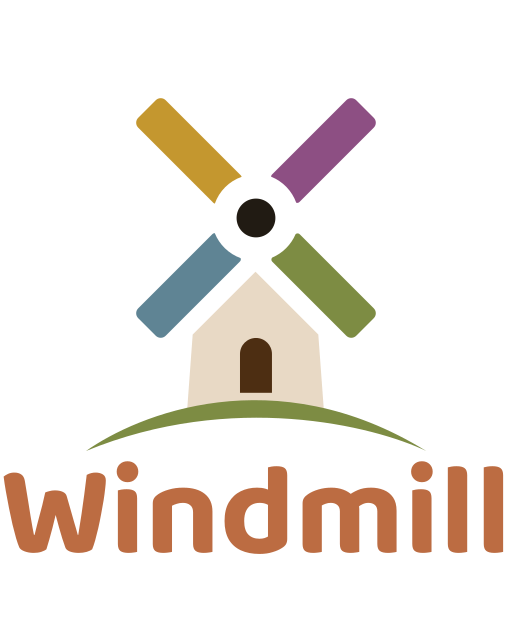

The identity direction and asset requirements for the approved windmill logo. The multicolour mark and Baloo 2 Bold wordmark are defined in Figma, node 9:129; asset usage and native icon follow-ups live in the logo reference.
The product & the world it lives in
Roadmap's core metaphor is a living skill tree. A roadmap becomes a branching tree: each step is a circular node ("fruit"), dependencies are curved branches, and completing a step lights up and unlocks the next one. A roadmap can be a product launch, a fitness goal, a language, or a room makeover. Progress reads as a tree coming into bloom, not a checklist. The windmill logo represents the whole brand, including the journal and gym products.
Nodes are steps
Flat, uniform circular discs. Locked → available → in-progress → complete, shown by glow and ring, never by shape.
Branches are dependencies
Soft curved connectors. A branch lights up in its parent's colour once that step is done.
Colour is category
A node's hue marks its kind (six earth tones), independent of how far along it is.
Who it's for
Anyone with a goal that has steps and an order. Copy and visuals stay domain-neutral. Lean on the game metaphor lightly; never childish.
The seed
The name evokes spinning millstones — grinding raw goals into something you can work through. The approved mark expresses that name as a four-colour windmill above a cream house and olive hill.
Brand direction — the feeling
The adjectives a mark has to belong to.
Warm Tuscan earth
Sun-baked clay, olive, ochre, cream. Every hue muted toward earth. The signature surface is a warm cream, never cold gray or white.
Organic, growing
Vines, branches, fruit ripening. Rounded and natural, not geometric or techy.
Warm & rounded
Bold, high-personality type; generously rounded corners; nothing sharp or corporate.
Minimal & airy
Space, flat colour, no gradients-as-backgrounds. One idea at a time.
Soft & glowy motion
Things breathe, pulse, and fade. Never mechanical, bouncy, or flashy.
Calm confidence
Encouraging and a little playful, never jokey. The product rewards you quietly.
Lean into
- The approved rounded windmill silhouette
- The cream + terracotta pairing as the hero combo
- The original muted sail colours and generous space
Avoid
- Neon, cold neutral palettes, or high-tech gradients
- Redrawing, recolouring, or adding detail to the approved windmill
- Sharp, angular, "enterprise SaaS" geometry
The approved logo system
One source across surfaces
The standalone windmill mark supports compact navigation and icons. The stacked lockup includes the approved Baloo 2 Bold wordmark as outlined vectors. Web navigation pairs the compact mark with readable brand text. Preserve the source geometry and colour. Android's adaptive icon is implemented; iOS icon application remains open.
Non-negotiable constraints
1 · Preserve the approved colours on the warm cream canvas (#F9F5EB) and near-black night theme (#0B0B0C). 2 · Use real text in email for images-off reading; no monochrome logo variant is approved. 3 · Review compact icons at 16×16px and under platform masks. 4 · Derive assets from the exact Figma-exported SVGs, keeping their aspect ratio and path geometry.
Web asset set
| Asset | Size / format | Where it's used |
|---|---|---|
| Compact mark | SVG full-colour | brand-mark.svg · navigation and icon source |
| Wordmark lockup | SVG stacked, outlined text | brand-logo.svg · standalone branding |
| App icon — large | 512×512 PNG | PWA install, high-DPI |
| App icon — medium | 192×192 PNG | PWA manifest |
| Apple touch icon | 180×180 PNG | Web install on the iOS home screen |
| Favicon | SVG + 32×32 PNG + .ico | Browser tab |
| Social preview | 1200×630 PNG | Open Graph / link unfurl (og-image) |
Raster icon sizes derive from the compact SVG. Android's adaptive icon passes build and emulator rendering checks; iOS icon assets require a platform review.
The current baseline
The approved identity is the multicolour windmill and its terracotta wordmark. Product kind-dots describe roadmap categories; the windmill carries brand identity.
Web app icon. The approved windmill mark on a cream ground. The logo reference records Android's verified adaptive icon and the remaining iOS icon work.

Social preview (og-image, 1200×630): wordmark + a live-coloured skill-tree fragment on cream.
Colour palette
Each accent is also a node kind. Use these exact values.
The six kinds — brand & accent hues
Canvas, ink & branches
How colour behaves
The logo keeps its original colours in both themes; do not apply a monochrome tint. Its house is #E8D9C5, door #4D2E12, and hub #211B13. Backgrounds are flat. The Figma preview's charcoal belongs to the page canvas; both exported SVGs are transparent.
Typography
Two rounded families and a mono.
Note on fonts
Baloo 2, Nunito, and JetBrains Mono are the current UI families. The approved Baloo 2 Bold logo wordmark is outlined in the SVG and needs no font download. Any future UI type decision must preserve the approved logo artwork.
Voice, motion & iconography
Voice & tone
Sentence case everywhere. Second person ("your roadmap", "you unlock"). Light game metaphor: "step", "unlock", "plant". No emoji, anywhere.
Motion feel
Exactly one thing loops at a time (the calm ceiling). The logo is static artwork; do not spin individual sails or add a decorative loop. Surrounding interactions follow the shared motion language.
Iconography
Simple 2px-stroke line icons (Lucide) throughout the product. A logo mark can be more crafted, but the two should feel like one family.
Shape language
Perfect circles for nodes; generously rounded corners elsewhere (8–32px). Soft, warm-tinted shadows; a gentle coloured glow rings "complete" fruit. Round, organic, never sharp.